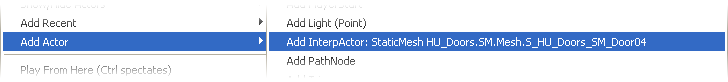
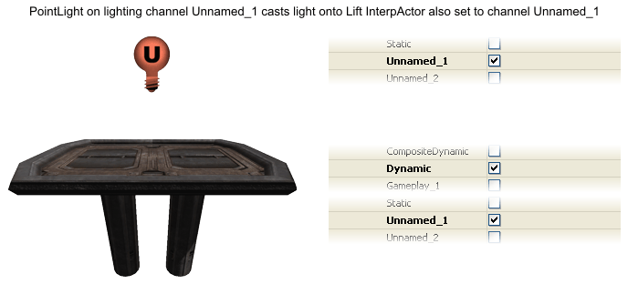
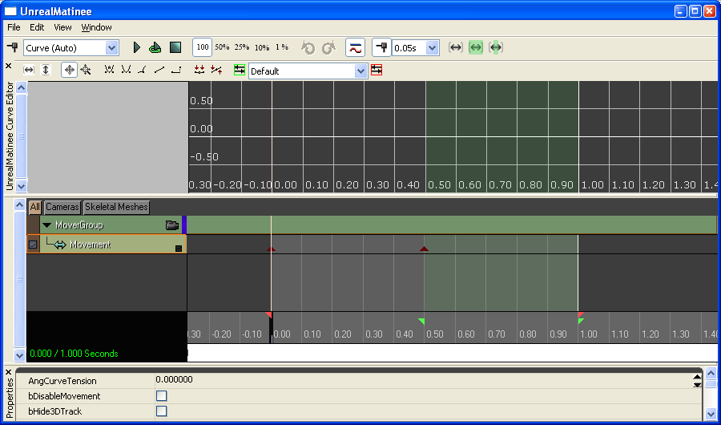
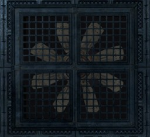

UDN
Search public documentation:
UsingInterpActorsJP
English Translation
中国翻译
한국어
Interested in the Unreal Engine?
Visit the Unreal Technology site.
Looking for jobs and company info?
Check out the Epic games site.
Questions about support via UDN?
Contact the UDN Staff
中国翻译
한국어
Interested in the Unreal Engine?
Visit the Unreal Technology site.
Looking for jobs and company info?
Check out the Epic games site.
Questions about support via UDN?
Contact the UDN Staff
InterpActors の使用
ドキュメント概要: ドア、エレベータ、リフト、回転子の移動するアクタの作成。 原著者: David Green?概観
InterpActor (補間アクタ) は、StaticMesh Actor の特別な動的バージョンです。さまざまな物理タイプをサポートし、動的ライティングを使用し、Unreal Kismet と Matinee を使用してさまざまな方法でコントロールすることができます。また、特定のアクタ状態のサウンドの多くを再生することができます。以前の Unreal Engine に慣れ親しんでいる方にとっては、InterpActor は Unreal Engine 3 の Mover です。 どのような標準的な StaticMesh も InterpActor として使用することができます。マップに挿入すると、InterpActor は、Orthogonal ビューポートのマジェンタ (紫) のワイヤフレーム カラーを除いて、標準的な StaticMesh と同じようにレンダリングします。また StaticMesh アクタと似たような方法で、エディタ内で動かしたり、スケールしたり、回転したりすることができます。
さまざまな InterpActors:
 InterpActor の挿入
InterpActor は、StaticMeshes と似たようなメソッドを使用してマップに挿入されます。
- Drag Grid (グリッドのドラッグ) が有効化されていることを確認して、Drag Grid Size (ドラッグ グリッド サイズ) を 4 と 32 の間に設定します。
InterpActor の挿入
InterpActor は、StaticMeshes と似たようなメソッドを使用してマップに挿入されます。
- Drag Grid (グリッドのドラッグ) が有効化されていることを確認して、Drag Grid Size (ドラッグ グリッド サイズ) を 4 と 32 の間に設定します。- 希望する StaticMesh を Generic ブラウザ ダイアログで選択します。
- ビューポートの 1 つで右クリックをして、ポップアップ メニューを表示させます。
- "Add Actor (アクタを追加)" メニュー項目を選択し、フライアウト メニューを表示させます。
- そして、"Add InterpActor (InterpActor の追加): StaticMesh <静的メッシュ名を選択>" メニュー項目をクリックして InterpActor を挿入します。 InterpActor は、ワイヤフレーム カラーがシアンでなくマジェンタであることを除いて、挿入された StaticMesh バージョンと同じように見えます。

InterpActor の原点とピボット InterpActor の基点場所とピボットの回転中心は、StaticMesh の原点、またはピボット点に基づくので、InterpActor として使用されるすべてのメッシュ モデルは、そのピボットが、適切なメッシュの基点とピボット中心にある状態で作成されることが不可欠です。例えば、大半のドアは、蝶番が通常ある片側のコーナーにピボットがあります。また、リフトのプラットフォームは、ベース中心にピボットがありますし、換気扇のピボットは回転翼の中心ハブにあります。 以下の StaticMesh ワイヤフレームの画像は、これらの各 InterpActor タイプの共通ピボット点を表しています。 InterpActor としての使用で、StaticMesh のピボットが誤った場所にデザインされている場合、ピボットの場所は Display.PrePivot プロパティを変更することで、現在挿入されているオブジェクトのインスタンスで変更することができます。ピボット オフセットが、既にわかっている場合は、単純に X、Y、Z 値をプロパティに入力します。オフセットが分からない場合は、エディタ計測ツール ([Ctrl] + マウスの真ん中ボタン) で、オフセット量を決定するか、InterpActor メッシュが希望するピボットと並ぶまで値を入力します。
InterpActor としての使用で、StaticMesh のピボットが誤った場所にデザインされている場合、ピボットの場所は Display.PrePivot プロパティを変更することで、現在挿入されているオブジェクトのインスタンスで変更することができます。ピボット オフセットが、既にわかっている場合は、単純に X、Y、Z 値をプロパティに入力します。オフセットが分からない場合は、エディタ計測ツール ([Ctrl] + マウスの真ん中ボタン) で、オフセット量を決定するか、InterpActor メッシュが希望するピボットと並ぶまで値を入力します。
 InterpActor が挿入されると、アクタを希望通りに動かすには、特定のプロパティと、場合によっては Kismet と Matinee を、セットアップしなければいけません。詳細に関しては、以下のトピックで、一般的な InterpActor タイプを参照してください。
InterpActor が挿入されると、アクタを希望通りに動かすには、特定のプロパティと、場合によっては Kismet と Matinee を、セットアップしなければいけません。詳細に関しては、以下のトピックで、一般的な InterpActor タイプを参照してください。
ライティング InterpActor
InterpActor は、本質的に動的 StaticMesh なので、動的にライトを当てることが必要です。標準的なベイクされた静的ライティングは、Perspective ビューポートとゲーム内で、InterpActor を黒くレンダリングしてしまいます。InterpActor のライティングには、数々のメソッドが利用可能となっており、選ばれるメソッドは特定のマップ デザインによって異なります。 動的ライティングの使用は、大幅なパフォーマンス コストが伴うことに注意してください。従って、使用は慎重に、また動的ライトは通常、必要最小限のエリアに制限されるべきです。 Ambient Glow (アンビエントの輝き) InterpActor は、DynamicSMActor.LightEnvironment.DynamicLightEnvironmentComponent.AmbientGlow.A,R,G,B プロパティを 0 でない値 (0,0,0 の RGB は黒です) に設定することによって、自分自身を照らすように設定することができます。選ばれた ARGB 値は、アクタが「輝く」色に直接対応しています。 AmbientGlow を使用する欠点は、アクタがサーフェス全体に均一にライトを当てるので、その機能から 3D シャドウイングを減少させる、または削除してしまうことです。過度に使用すると、AmbientGlow は InterpActor を平坦で、味気なく見せてしまいます。 ライト環境
未完成
ユーザー ライティング チャンネル
UE3 は 6 つの Unnamed_1 から Unnamed_6 と呼ばれるユーザーによって定義されるライティング チャンネルをサポートしています。ユーザーによって定義されるチャンネルは、カスタム ライティングを、シーン内の定義されたオブジェクトのセットに制限することを可能にします。InterpActor 上の同じチャンネルに対応する Unnamed_* チャンネルを選択した状態で、1 つ以上の DirectionalLight、PointLight、SkyLight、SpotLight アクタを必要に応じて配置することで、これらのライトは InterpActor のみに影響を与えます。
従って、InterpActor にライトを当てる簡単なメソッドは、InterpActor の DynamicSMActor.StaticMeshComponent.Lighting.LightingChannels.Dynamic と .Unnamed_1 チャンネル のみ を True に設定することです。これは、InterpActor が投射物などの物からの動的ライトと、ユーザーによって定義されたライト (これも同じライティング チャンネルに設定されています) の両方を表示することを可能にします。その後、InterpActor に関連する適切な場所に PointLight を配置し、Light.LightComponent.LightingChannels.Unnamed_1 ライティング チャンネル のみ を True に設定します。
ライト環境
未完成
ユーザー ライティング チャンネル
UE3 は 6 つの Unnamed_1 から Unnamed_6 と呼ばれるユーザーによって定義されるライティング チャンネルをサポートしています。ユーザーによって定義されるチャンネルは、カスタム ライティングを、シーン内の定義されたオブジェクトのセットに制限することを可能にします。InterpActor 上の同じチャンネルに対応する Unnamed_* チャンネルを選択した状態で、1 つ以上の DirectionalLight、PointLight、SkyLight、SpotLight アクタを必要に応じて配置することで、これらのライトは InterpActor のみに影響を与えます。
従って、InterpActor にライトを当てる簡単なメソッドは、InterpActor の DynamicSMActor.StaticMeshComponent.Lighting.LightingChannels.Dynamic と .Unnamed_1 チャンネル のみ を True に設定することです。これは、InterpActor が投射物などの物からの動的ライトと、ユーザーによって定義されたライト (これも同じライティング チャンネルに設定されています) の両方を表示することを可能にします。その後、InterpActor に関連する適切な場所に PointLight を配置し、Light.LightComponent.LightingChannels.Unnamed_1 ライティング チャンネル のみ を True に設定します。6 つのユーザーによって定義される Unnamed_* ライティング チャンネルは、通常カスタム ライティング ニーズに十分なチャンネルの数です。 ユーザーによって定義されたライティング チャンネルを使用する欠点は、複雑な場合に、残りのシーン静的ライティングをマッチさせる問題で、6 つの Unnamed チャンネルしか利用可能でないことです。

一般的な InterpActor プロパティ
未完成ドア
近日公開エレベータ
近日公開リフト
リフト タイプの InterpActor を作成することは、UE3 では簡単なタスクです。というのは、Epic がほとんどの作業をしてしまっているからです。リフトは、StaticMesh、単純な Unreal Kismet、Matinee セットアップしか必要としません。 1. 希望する StaticMesh を Generic ブラウザで選択します。2. InterpActor をマップに挿入し、希望の位置に配置します。
3. アクタ プロパティ ダイアログを開き、以下の値を設定します。
- Collision.BlockRigidBody = True
これは、プレイヤーと AI が InterpActor に衝突したり、上に立ったりすることができるようにするためです。これのデフォルトは False です。 - Collision.CollisionType = COLLIDE_BlockAll
これは、InterpActor が他のアクタと衝突したり、シャドウを投影したりできるようにするためです。
- Display.DrawScale と Display.DrawScale3D.X,Y,Z は好きなように設定します。
InterpActor のサイズです。これらのデフォルトはすべて 1.0 です。
- DynamicSMActor.LightEnvironment.DynamicLightEnvironmentComponent.AmbientGlow.A,R,G,B を好きなように設定します。
InterpActor に明るさを追加します。これらは、デフォルトで A = 1.0、R = 0.0、G = 0.0、B = 0.0 です。 - DynamicSMActor.LightEnvironment.bCastShadows = True
InterpActor にシャドウを投影させたくない場合は、これを False に設定します。これのデフォルトは True です。 - DynamicSMActor.LightEnvironment.LightEnvironmentComponent.bEnabled = False
この InterpActor とともに LightEnvironment を使用している場合は、True に設定します。
- InterpActor.bContinueOnEncroachPhysicsObject = True
If the InterpActor is to continue even if たとえ PHYS_RigidBody アクタが近くにあったとしても、InterpActor が続く場合です。これのデフォルトは True です。 - InterpActor.bDestroyProjectilesOnEncroach = True
InterpActor が、それと衝突する投射物を爆発させる場合です。これのデフォルトは True です。 - InterpActor.bStopOnEncroach = True
他のアクタに近づいた際に、InterpActor が停止する場合です。これのデフォルトは True です。
- InterpActor をマップに配置するのに、Movement.Location を好きなように設定します。
- Movement.Physics = PHYS_Interpolating
- InterpActor をマップで正しい方向に置くために、Movement.Rotation.Pitch,Roll,Yaw を好きなように設定します。
- InterpActor を選択します。
- "K" ツールバー ボタンをクリックして、Unreal Kismet を起動します。
- Kismet ダイアログで右クリックをして、ポップアップ メニューを表示します。"New Event Using InterpActor_x (InterpActor_x を使用する新しいイベント)" を選択し、"Mover (ムーバ)" アイテムを選択します。これは、デフォルトの Lift ムーバ スタイル Kismet テンプレートを作成します。
- 新しい "Comment (wrap) (コメント (ラップ))" を Kismet に追加し、"Left Lift" などの名前をつけて、それをシーケンスの周りにラップします。
Kismet Mover Event は InterpActor Mover と Matinee をによって構成されています。
- Pawn (プレイヤー、または AI) がリフトに乗ると、Matinee "Play" をトリガする Mover "Pawn Attached" イベントを引き起こします。Matinee "Play" は、Matinee Movement トラックを再生し始めます (Matinee トラックは、下で説明します)。
- Mover が、そのオープン シーケンスを完了すると (つまり KeyFrame 0 から最後の KeyFrame まで移動すると)、Matinee "Reverse" をトリガする Mover "Open Finished" イベントを引き起こし、その後 Matinee Movement トラックを反対に再生します。
- Mover が Pawn に当たると起きる Mover "Hit Actor" イベントは、Matinee "Change Dir" をトリガし、これは、Matinee トラックの方向を変更させ、Mover を Pawn から遠ざけます。
 5. リフト アニメーションの Matinee 値を作成します。
マップ ビューポート内で InterpActor がまだ選択されていることを確認してください。
5. リフト アニメーションの Matinee 値を作成します。
マップ ビューポート内で InterpActor がまだ選択されていることを確認してください。 - Matinee デバイスをダブルクリックするか、 右クリックをして "Open UnrealMatinee" を選択し、Matinee Editor (Matinee エディタ) ダイアログを表示させます。
- 中央のパネルの MoverGroup アイテムを見つけ、その下にある Mover トラックを表示するために開いてください。
- "Toggle Snap (スナップをトグル)" ボタンがオンになってない場合は、それをクリックして、0.1s スナップ (1 秒の 10 分の 1) に設定します。
- ダイアログ左上にある "Add Key (キーを追加)" ボタンをクリックします ("Toggle Snap (スナップをトグル)" の同じアイコン ボタンと混乱しないようにしてください)。
これは、キーフレームを時間位置 0.00 に追加します。これが、リフトの下で停止した状態になります。 - 黒いスライダー バーを 0.5s にドラッグし、"Add Key (キーを追加)" をもう一度クリックして、2 つ目のキーフレームをここに追加します。少しずれている場合、スナップが 0.5s にしてくれます。
- 2 つ目のキーフレームの小さいオレンジ色の三角形/ピラミッドをクリックします。Matinee は、"OKey1" を表示し、エディタは "ADJUST KEY 1" を表示します。
- InterpActor をこの KeyFrame の場所に移動させます。これが、リフトが上がった場所になります。
- ピンク色の Time End マーカーを 1.0s の時間にドラッグします。これは、リフトがその上がった位置に留まる時間を決定します。
- タイム スライダーをドラッグして、動きを見ることができます。
- Matinee と UnrealKismet を閉じます。

6. このチュートリアルで先に言及した希望のライティング スタイルを追加します。 リフトに AI サポートを追加する 後ほど完成回転子 (ファンなど)
絶え間なく回転する InterpActor の作成は非常に簡単で、アクタのもっともベーシックな機能の 1 つです。回転子タイプ InterpActor は、Unreal Kismet や Matinee での作業を必要としません。 1. 希望する StaticMesh を Generic ブラウザで選択します。2. InterpActor をマップに挿入し、希望の位置に配置します。
3. アクタ ピボットの場所が、回転子が回転するのに正しいことを確認してください。
4. アクタ プロパティ ダイアログを開き、以下の値を設定します。
- Collision.BlockRigidBody = False
InterpActor が、剛体アクタと衝突する場合、これを True に設定します。これのデフォルトは False です。 - Collision.CollisionType = COLLIDE_BlockAll
これは、InterpActor が他のアクタと衝突したり、シャドウを投影したりできるようにするためです。
- Display.DrawScale と Display.DrawScale3D.X,Y,Z は好きなように設定します。
InterpActor のサイズです。これらのデフォルトはすべて 1.0 です。
- DynamicSMActor.LightEnvironment.DynamicLightEnvironmentComponent.AmbientGlow.A,R,G,B を好きなように設定します。
InterpActor に明るさを追加します。これらは、デフォルトで A = 1.0、R = 0.0、G = 0.0、B = 0.0 です。 - DynamicSMActor.LightEnvironment.bCastShadows = False
InterpActor にシャドウを投影させたい場合は、これを True に設定します。これのデフォルトは True です。InterpActor デザインとマップでのその使用法によって、動的シャドウは適切に見えない場合があります。 - DynamicSMActor.LightEnvironment.LightEnvironmentComponent.bEnabled = False
この InterpActor とともに LightEnvironment を使用している場合は、True に設定します。
- InterpActor.bContinueOnEncroachPhysicsObject = True
If the InterpActor is to continue even if たとえ PHYS_RigidBody アクタが近くにあったとしても、InterpActor が続く場合です。これのデフォルトは True です。 - InterpActor.bDestroyProjectilesOnEncroach = True
InterpActor が、それと衝突する投射物を爆発させる場合です。これのデフォルトは True です。 - InterpActor.bStopOnEncroach = True
他のアクタに近づいた際に、InterpActor が停止する場合です。これのデフォルトは True です。
- InterpActor をマップに配置するのに、Movement.Location を好きなように設定します。
- Movement.Physics = PHYS_Rotating です。これは InterpActor が、ゲーム中に常に原点ピボットで回転するようにです。
- InterpActor をマップで正しい方向に置くために、Movement.Rotation.Pitch,Roll,Yaw を好きなように設定します。
- Movement.RotationRate.Yaw を好きなように設定します。これは、InterpActor が回転する速度を指定します。
値が高ければ高いほど、速度は速くなります。換気扇に一般的なのは、300 から 500 の値です。
